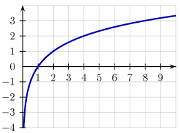

📉 Función Logarítmica

Criterio:
La función logarítmica se define como f(x) = logb(x), donde b es la base y x > 0. Es la inversa de la función exponencial.
Características
- Dominio: (0, +∞)
- Recorrido: (-∞, +∞)
- Punto de corte con el eje x: (1, 0)
- Asíntota vertical en x = 0
- Creciente si b > 1
Tabla de valores
| x |
log10(x) |
| 1 | 0 |
| 2 | 0,31 |
| 4 | 0,63 |
| 5 | 0,73 |
¿Cómo Identificar en la tabular?
se puede Identificar...
🔙 Volver